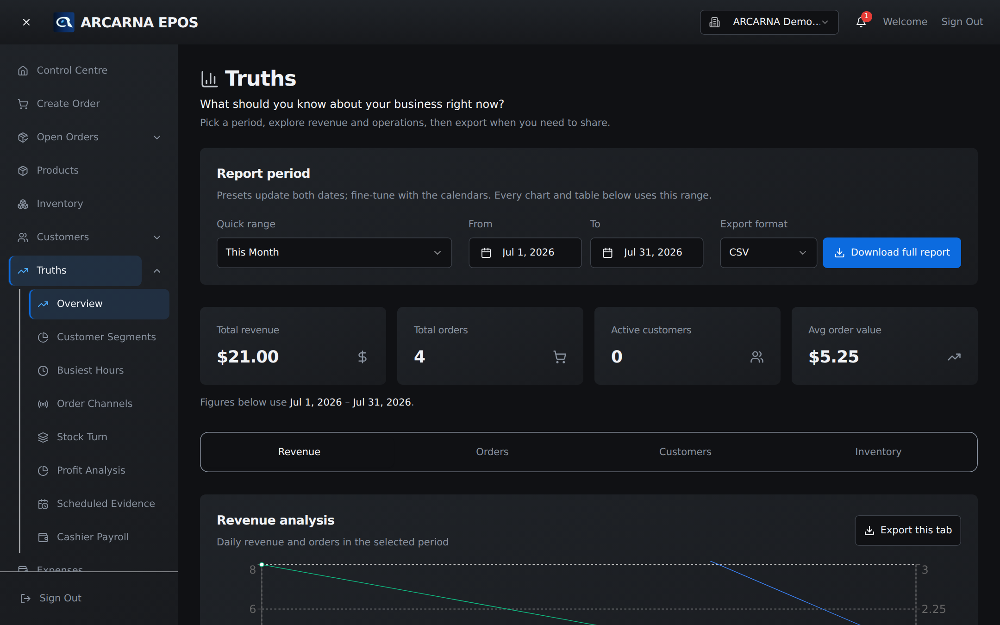
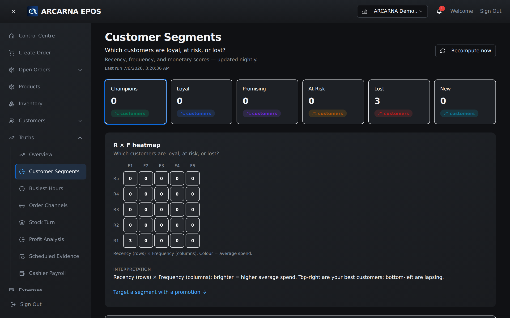
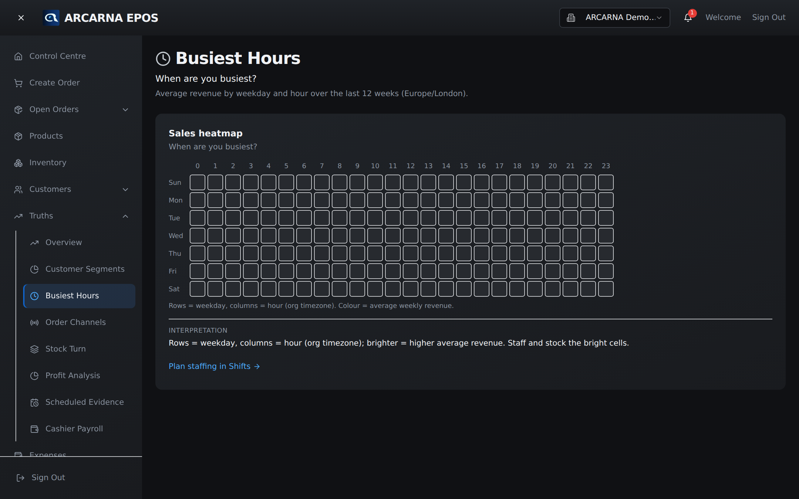
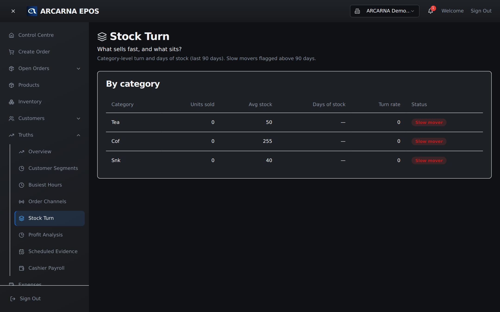

Staff training manual
Staff training manual
Findings about your business, each one carrying the evidence behind it. This section explains what every measure means in plain English — so the numbers help you decide, not just look busy. MANAGER
What this area is
Truths, not charts for the sake of it
Open Truths from the menu. Every measure here answers a real question a shopkeeper asks — who's worth serving, when you're busy, what's selling, what isn't — and shows the evidence so you can trust the answer. A chart that doesn't help you decide something has no place here; each one below earns its keep.

Who's worth serving more
Customer groups (RFM)
RFM sorts your customers by three simple facts about their buying, then groups them so you know who to look after, who to win back, and who not to over-serve. The three letters stand for:
| Letter | What it measures | Plain meaning |
|---|---|---|
| R — recency | How recently they last bought | Came in yesterday, or not for months? |
| F — frequency | How often they buy | A regular, or a one-off? |
| M — monetary | How much they spend in total | Big spender, or small basket? |
How the score works
Each customer gets a score from 1 to 5 on each letter, worked out by ranking them against your other customers. A 5 for recency means they're among your most recent buyers; a 1 means among the least recent. The same for frequency and spend. arcarna then reads those three scores together and places each customer in a group:
| Group | Roughly means | What to do |
|---|---|---|
| Champions | Recent, frequent, high spend (R=5, high F & M) | Look after them — they carry the business. |
| Loyal | Buy often and spend well, fairly recently | Keep them happy; they're dependable. |
| Promising | Recent, but not yet frequent | Encourage a second and third visit. |
| New | Just made their first purchase | Make the first experience a good one. |
| At-Risk | Good history, but haven't been in lately | Win them back before they're gone. |
| Lost | Low recency and low frequency | Don't spend much to chase them. |

When you're busy
Hour of day
This lays out an ordinary week as a grid — every day of the week down one side, every hour along the other — and shades each square by how much you typically take then. The bright squares are your real trading peaks; the dark ones are the quiet hours.
It's built from your actual orders, averaged for each day-and-hour slot, so a busy Saturday afternoon is judged as Saturday afternoons, not smeared across the whole week. Use it to decide staffing, delivery cut-offs, and when a promotion would actually reach people — and, just as usefully, when giving a discount is quietly costing you at your busiest time.

Where sales come from
Channel attribution
Not every sale starts the same way. Some walk up to the till, some arrive by WhatsApp, some through other routes you use. Channel attribution shows how your takings split across those channels, so you can see which ones actually bring in money — and whether the effort you put into one is paying back.
What's moving, what's stuck
Stock turn
Stock turn answers a costly question: is your money sitting on shelves, or working? For each product group it works out roughly how many days of stock you're holding at your current rate of sale — and flags it:
| Flag | Days of stock | What it means |
|---|---|---|
| Healthy | Up to 30 days | Selling through at a sensible pace. |
| Watch | 30 to 90 days | Moving slowly — keep an eye on it. |
| Slow | More than 90 days | Dead or dying stock — money tied up. Consider a discount or delisting. |

Reading it well
Three habits that make the numbers useful
- Ask a question first. Come to the Truths with something you want to know — "why was last week busy but flat?" — not just to browse. The measures are built around real questions.
- Trust the window, not the gut. Every figure is measured against a period (last 30 days, same weekday, and so on). "Down 7% vs last month" is a fact; "feels quiet" isn't.
- Follow it to a move. A finding that doesn't change what you do is just decoration. Each Truth is meant to end in a decision — reprice, restock, restaff, or win a customer back.